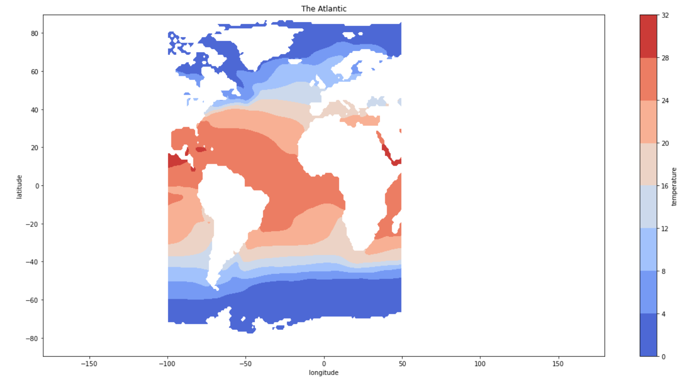

Data Analysis
Processing sea surface temperature data
We used a pre-built function to calculate the winter average of sea surface temperature (SST) data over the months December to March so that we could compare it to the North Altantic Oscillation (NAO) climate index. To understand how SST differs each year from the long-term mean for the region, we computed SST anomalies by subtracting the SST of each grid point from the SST winter average.
Identifying strong NAO years
As we were using a dataframe full of NAO values over the course of 155 years (1865-2020), we wanted to calculate the average to find what the NAO should usually be. Then, with this average, we would be able to compare it to various other years to identify which years had a positively strong NAO.
After calculating the NAO average, we compared the average to the NAO index of each year. For the years that had an NAO index greater than the NAO average, we separated them and focused on observing those years.
Visualizing sea surface temperature data
Now that we had identified the years with strong NAOs, we wanted to see if that had any visual effect on the sea surface temperature. We used code in order to index our processed SST data corresponding to the years of strong NAO we had previously found. Once we had filtered out a list of years with their corresponding SST data, we put this information into our code and created an animation that runs through the years of strong NAO. As the animation plays, we can see the anomalies in sea surface temperature over the years.
Code
Link to our scriptFindings
In general, we noticed that cooler temperatures are found around both poles and warmer temperatures around the equator (see Figure 1) because of how the Sun's rays hit different regions of the Earth. Europe tends to be warmer than Canada and North America because surface ocean currents brings warmer water from the tropics to Europe. This general state of the Atlantic Ocean can be changed by the NAO because the NAO impacts the direction of the winds that drive the warm, tropical waters to the poles.
From analyzing ocean temperature during strong NAO years, we found that SST anomalies in the Atlantic Ocean have been slowly rising over the time period observed (1865-2020). We saw that in earlier years (1865-1930), temperatures were still relatively cool, but from 1950-2020 there were areas that began to display abnormally high temperatures, as well as shifts related to sea ice by the North Pole (see Figure 2). A specific area where you can see this temperature change is by Canada and northern Europe, where temperatures have become increasingly warm from 1990 onwards. Contrastingly, a large region of cold water can be found south of Greenland and Iceland. Since we have only looked at the NAO and ocean temperatures during strong periods, we would need to do further research and analysis to confirm the relationship between the warming trends we observed and the existence of the NAO and climate change. This will be talked about in greater detail as we explain future steps we could take.
Figure 1
Average sea surface temperature across the Atlantic Ocean
Figure 2

Sea surface temperature anomalies during strong NAO years.